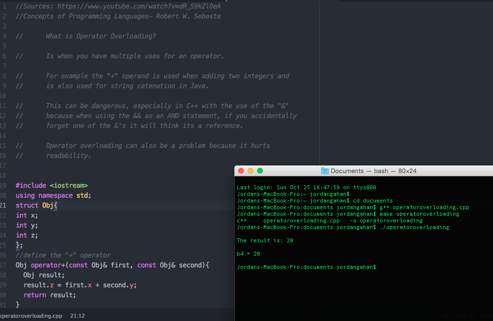
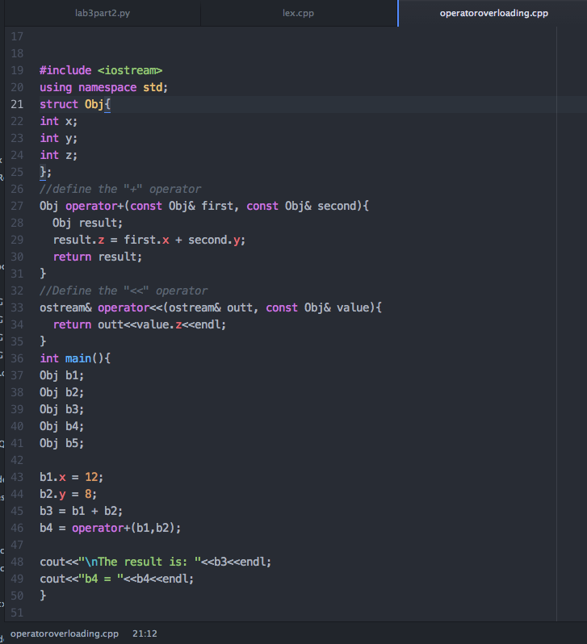
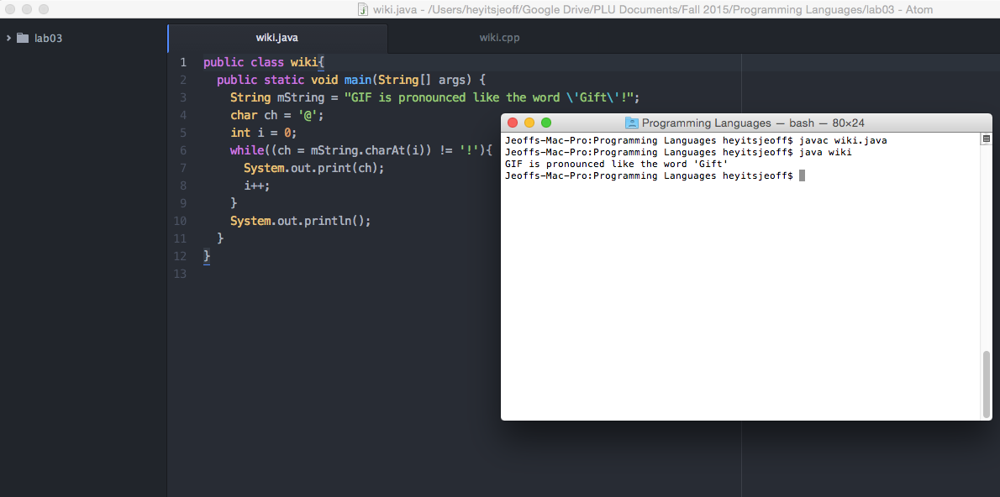
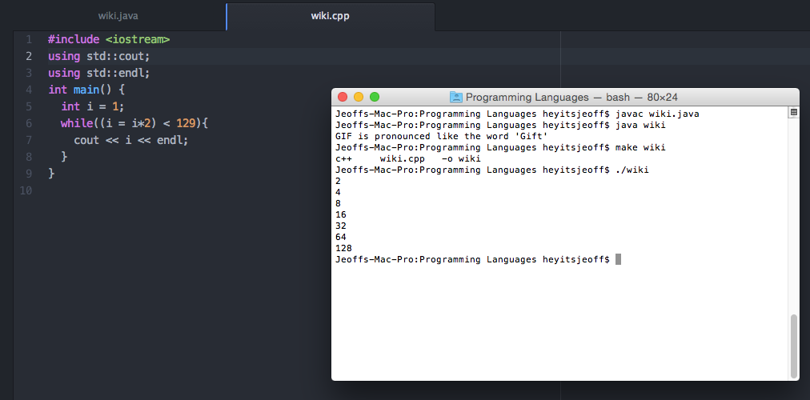
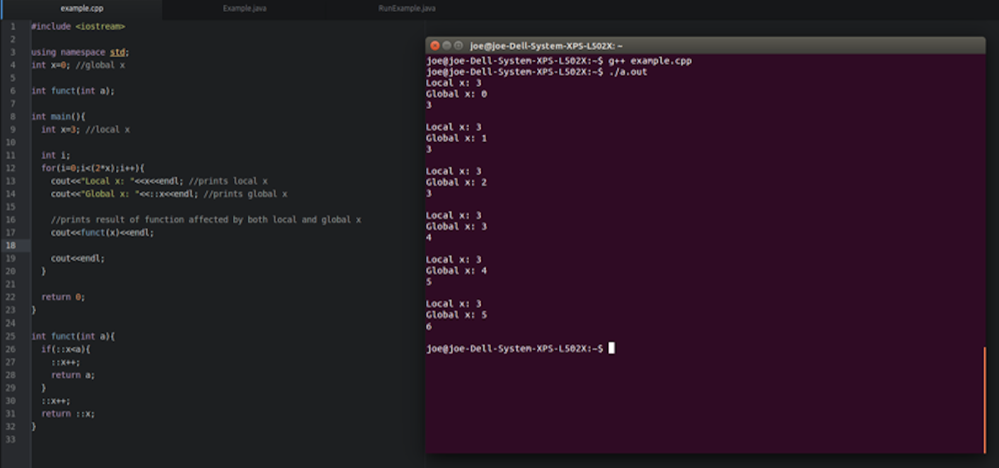

Operator Overloading



Assignment in Expressions


Using an assignment as an expression is a way to shorten code,
but can make code more difficult to interpret

Outer Scope Access

Demonstrate how outer scopes can be accessed when a name is "hidden" by a local name:
Accessing outer scope variables can be useful when a function logically needs to increment or otherwise change a certain value that affects the rest of the program, or other functions in the program.